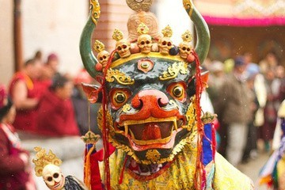

FESTIVALS
Due to its diverse ethnic composition, Sikkim celebrates a wide variety of festivals.
1 Bhutia Festivals :-
Losoong (Namsoong) ,Saga Dawa ,Drupka Teshi, Pang Lhabsol ,Bumchu
a) Saga Dawa
Saga Dawa is one of the most significant Buddhist festivals celebrated in Sikkim, marking the birth, enlightenment, and death anniversary of Lord Buddha. It falls on the full moon day of the fourth month of the Tibetan lunar calendar. The festival is observed with prayers, rituals, and processions, and is a time for devotees to accumulate merit through acts of kindness, meditation, and offerings. It is a vibrant expression of devotion and spirituality in Sikkim's Buddhist community.
b)Losoong

The Losoong Festival, also known as Namsoong, marks the Sikkimese New Year and is celebrated by the Bhutia and Lepcha communities in Sikkim. Held in December, it coincides with the end of the harvest season and is a time for thanksgiving and feasting. Traditional Cham dances, archery competitions, and rituals at monasteries like Phodong and Rumtek highlight the festivities. It symbolizes prosperity, unity, and cultural harmony
2 Lepcha Festivals :-
a)Tendong Lho Rum Faat
Tendong Lho Rum Faat is a traditional Lepcha festival ,It honors Mount Tendong, considered sacred by the Lepcha people, and signifies gratitude for its protection during a mythical flood. The festival features rituals, prayers, and storytelling to preserve the Lepcha culture and spiritual beliefs. It is a symbol of harmony with nature and reverence for their ancestral heritage.
The state celebrates various other kind of festivals such as Indra Jatra, Maghe Sankranti, Tihar (Deepavali),Dasain (Dussehra), Holi,Christmas but
The most SIGNIFICANT FESTIVAL of SIKKIM is.
Losar
Losar is the traditional Tibetan New Year celebrated with vibrant festivities in Sikkim, marking the start of a new year in the Tibetan lunar calendar. It usually falls in February or March and is a time for family reunions, feasts, and rituals to usher in prosperity and good fortune. The festival features colorful dances, prayers, and offerings to ward off evil spirits and bring blessings. It is a joyful occasion for the people of Sikkim, showcasing their rich Tibetan culture and heritage.